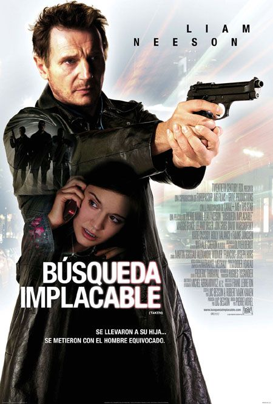
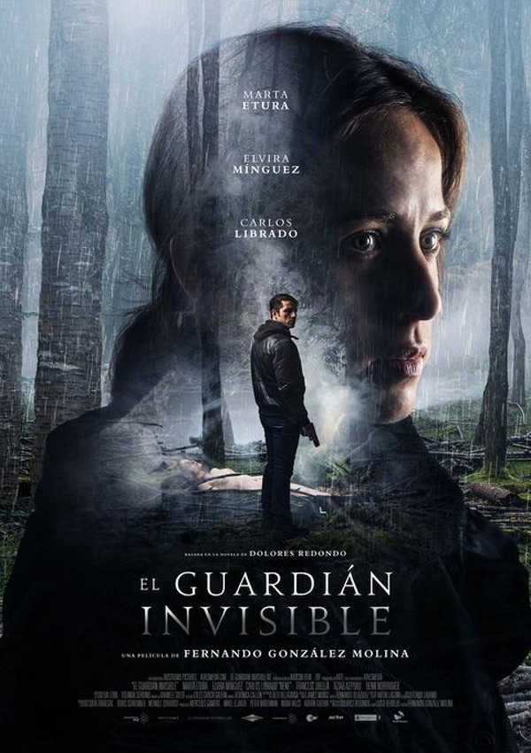

-

"Busqueda Implacable" es una película de acción protagonizada por Liam Neeson. La trama gira en torno a un ex agente del gobierno estadounidense cuya hija es secuestrada durante unas vacaciones en Europa. Desesperado por encontrarla, el protagonista se adentra en el peligroso mundo del tráfico de personas, utilizando todas sus habilidades y recursos para recuperar a su hija antes de que sea demasiado tarde. La película es conocida por sus intensas escenas de acción y la actuación destacada de Neeson en el papel principal.
-

"El guardián invisible" es una película española de 2017 dirigida por Fernando González Molina y basada en la novela homónima de la escritora Dolores Redondo. La película sigue a Amaia Salazar, una inspectora de policía de la unidad de homicidios de Pamplona, quien regresa a su pueblo natal en el valle de Baztán para investigar el asesinato de una adolescente en el bosque. A medida que avanza en la investigación, Amaia comienza a desenterrar secretos oscuros del pasado de su familia y su pueblo, y se ve arrastrada a un misterioso mundo de rituales ancestrales y creencias sobrenaturales. La película es la primera de una trilogía basada en las novelas de Dolores Redondo sobre la inspectora Salazar.
¡Bienvenidos a mi blog de películas! Aquí encontrarás una variedad de reseñas y recomendaciones de películas de diferentes géneros, desde dramas y comedias hasta ciencia ficción y acción. Soy un apasionado del cine y he visto muchas películas a lo largo de los años, por lo que estoy emocionado de compartir mis opiniones y conocimientos contigo. Además de reseñas, también cubriré noticias y eventos relacionados con la industria del cine. Espero que disfrutes leyendo mis publicaciones tanto como yo disfruto escribiéndolas. ¡Vamos a explorar el emocionante mundo del cine juntos!
Categorias:
Volver arriba